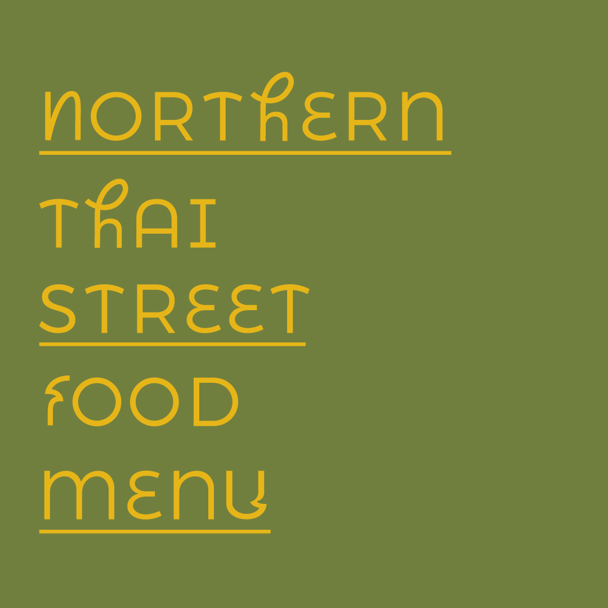
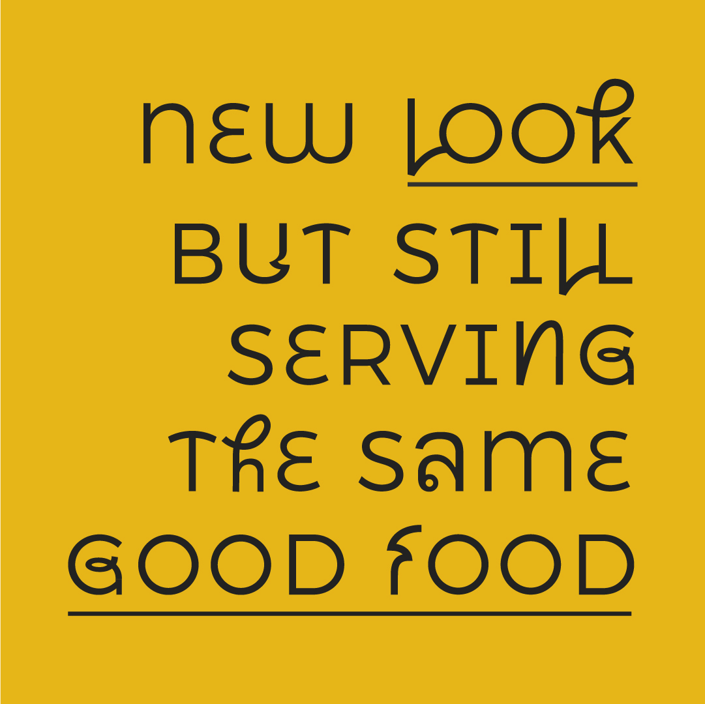
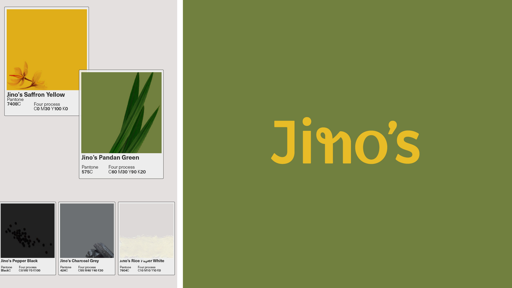
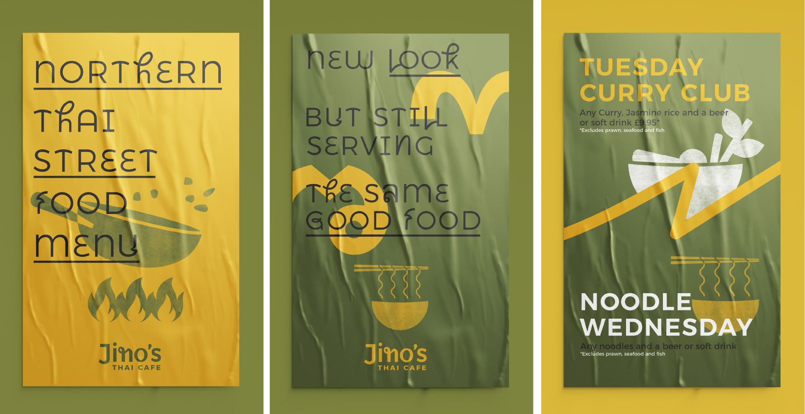
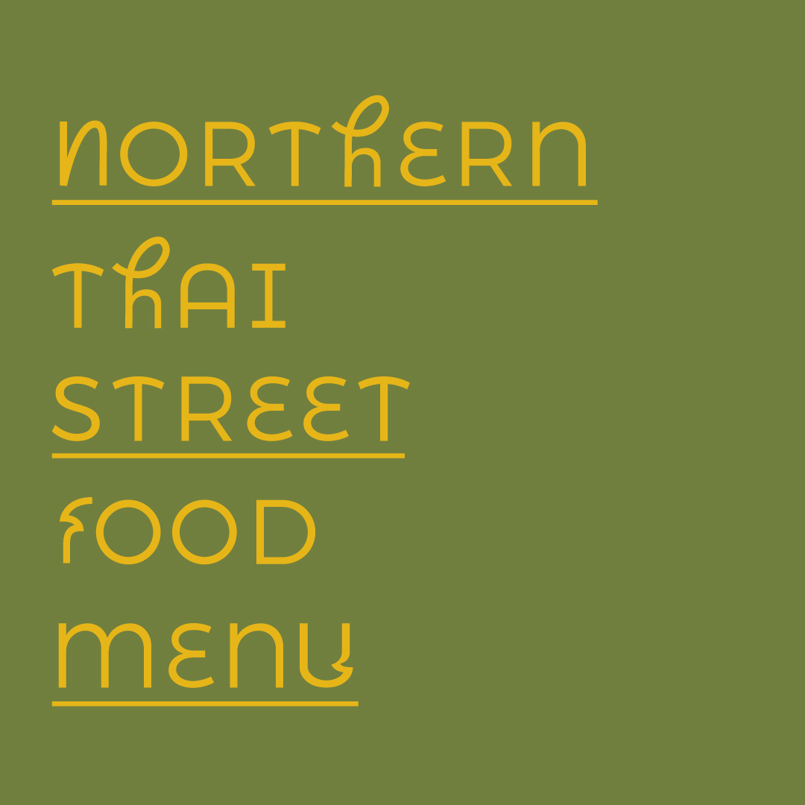
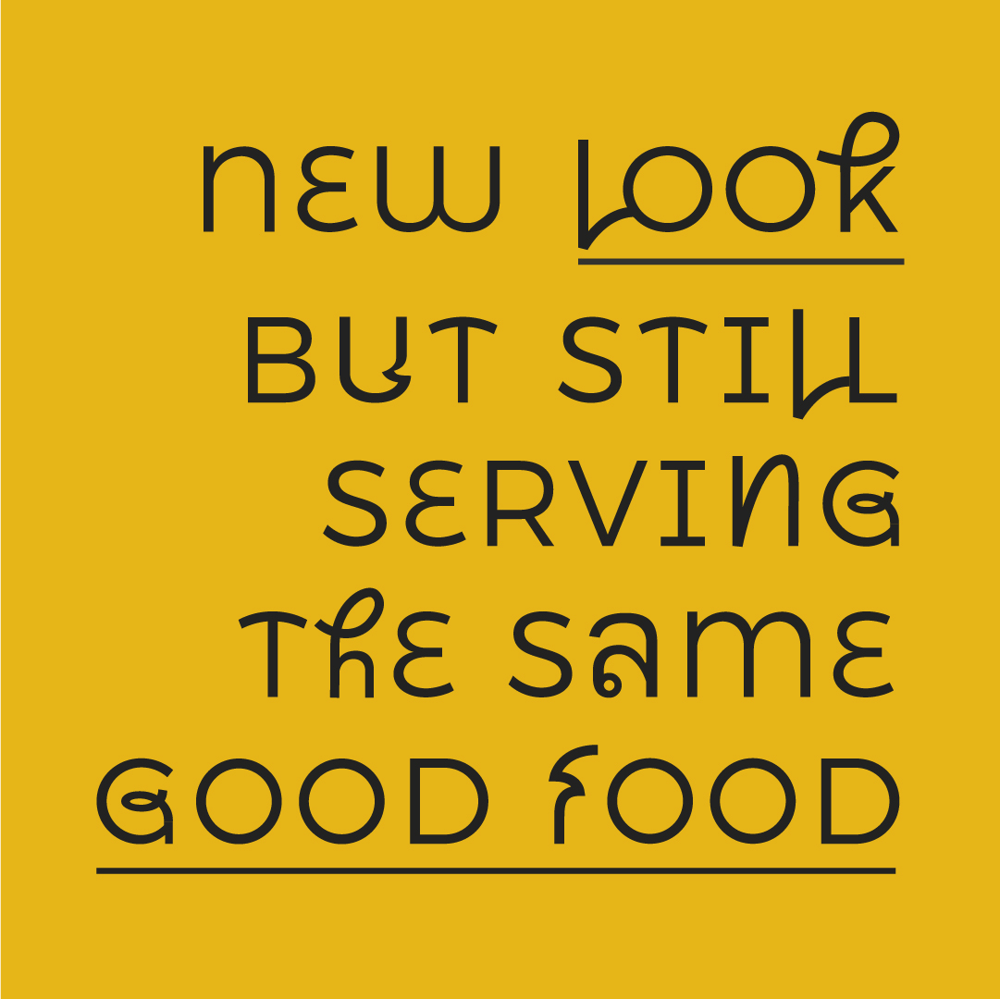
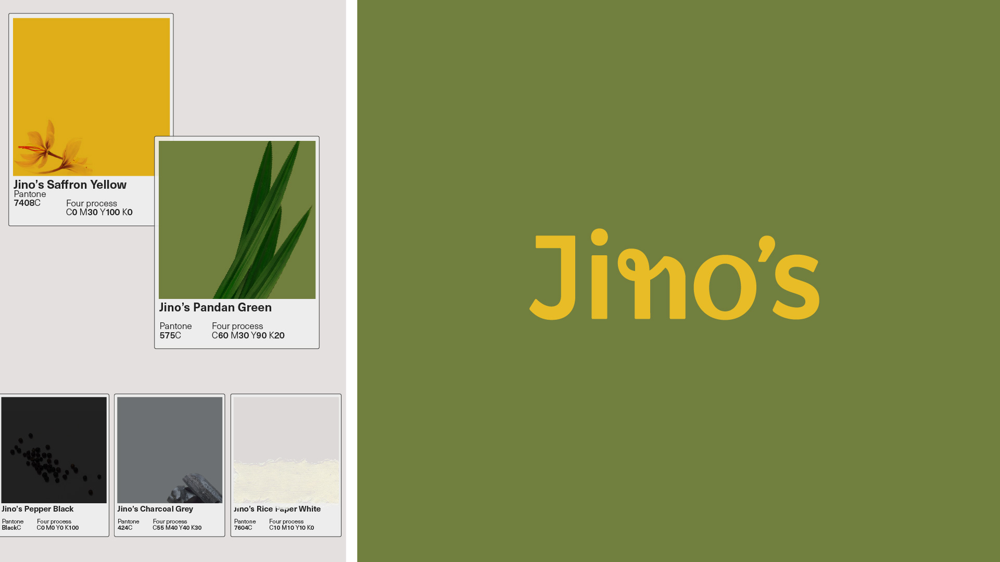
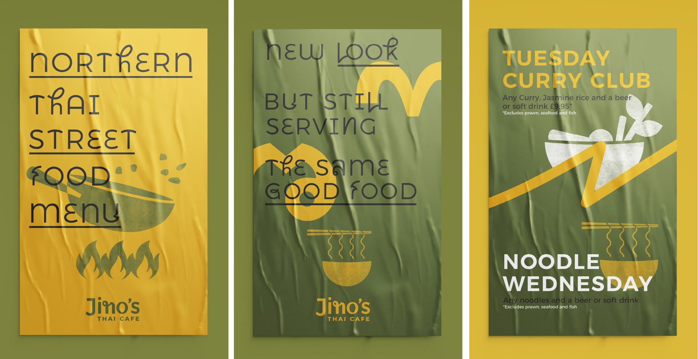

A taste of Northern Thailand in Leeds
Jino's Thai Cafe, the oldest family-run Thai restaurant in Headingley, takes pride in its rich heritage and owner Malinee's journey from her hometown, Chiang Mai, in Northern Thailand, to Leeds over 18 years ago. While the restaurant holds a cherished place in the vibrant student area of Leeds, it faced mounting competition from a growing number of Thai establishments across England.
...
The Challenge:
Standing out in the competitive Thai dining scene
Upon delving into discussions with the passionate individuals behind Jino's, we discovered their deep-rooted love for the Northern Thai culture and its exquisite cuisine. Our collaborative efforts refined their vision and charted a clearer path for the brand, allowing it to distinguish itself amidst its competitors and redefine the perception of Thai restaurants. Jino's Thai Cafe aimed to move away from the bustling city life of Bangkok and instead embody the essence of Northern Thailand, with its verdant landscapes and tranquil atmosphere. The brand's visual identity needed to eloquently capture this spirit, striking a balance between expressiveness and approachability.
Rather than stealing the spotlight, the design elements and objects should be elevated and placed at the center of attention, allowing their inherent beauty to shine.
What we did:
embracing the beauty of Northern Thailand
To encapsulate the essence of Jino's Thai Cafe, we embarked on a creative journey that would authentically showcase the allure of Northern Thailand's cultural heritage and lush greenery. Our design approach aimed to be both expressive and inviting, enticing customers to embark on a sensory journey of flavors and visual delights.
We developed a visual identity that celebrated the vibrant hues and intricate patterns found in Northern Thai art and craftsmanship. By incorporating these elements into the brand's visual assets, we created a harmonious blend that evoked a sense of warmth and authenticity.
To ensure the focus remained on the designs and objects themselves, our design choices were intentionally understated, allowing the captivating beauty of Northern Thai culture to take center stage. Each element was thoughtfully crafted to enhance the overall dining experience, subtly guiding guests towards an immersive encounter with the flavors and traditions of Northern Thailand.
Jino's Thai Cafe's brand identity now resonates with the captivating allure of Northern Thailand, inviting diners on a culinary adventure filled with the lush greenery and rich heritage that defines this remarkable region.
 






